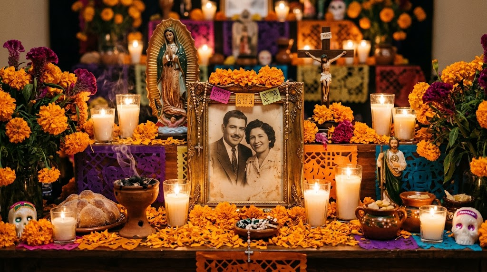
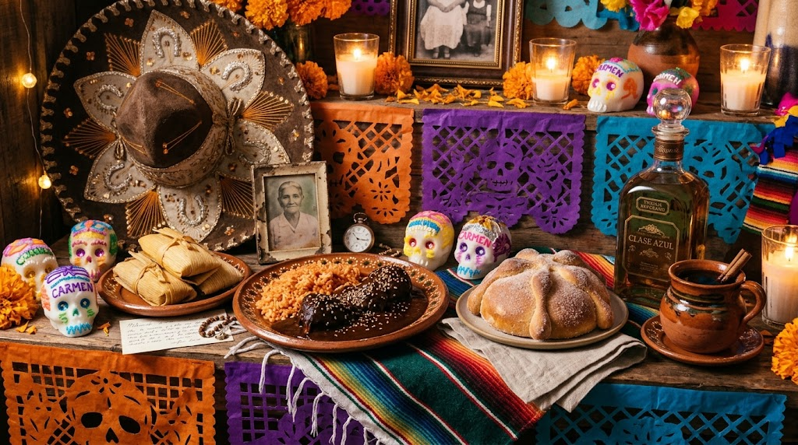
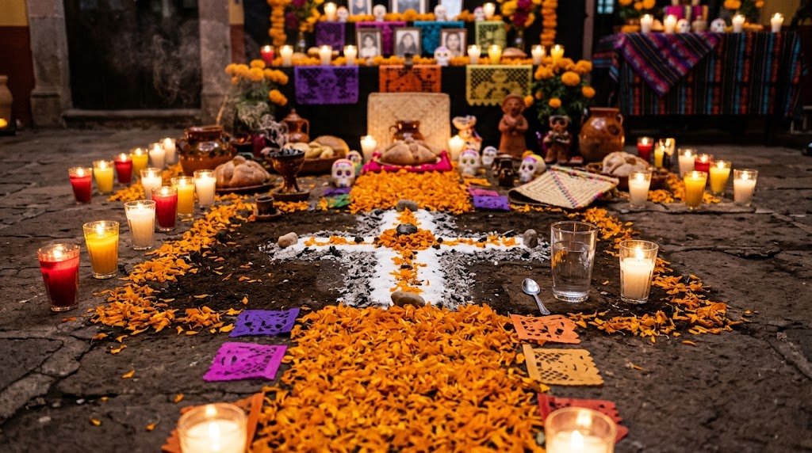

Tradición para recordar a nuestros seres queridos



La luz que guía el camino de regreso a casa.
Con su color y aroma marca el sendero para las almas.
Representa la fraternidad y el ciclo de la vida y la muerte.
Recordatorio dulce de la presencia de la muerte en la vida.
Honra a la persona a quien está dedicada la ofrenda.
Representa el aire y la alegría de la festividad.